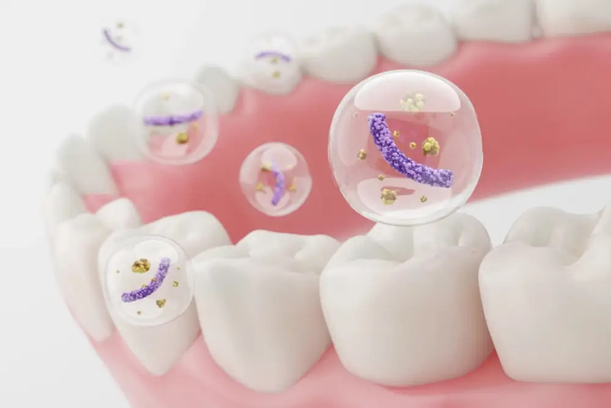

歯周病治療
歯周病治療について
ブラッシングなどの普段のお手入れの状態が悪いと、歯垢（プラーク）がたまり、歯垢の中にいる歯周病菌が、歯槽骨を攻撃していきます。
成人の70％が歯周病と言われていますが、初期の歯周病には自覚症状がほとんど無いため、気が付いた時には歯周病が進行していることも少なくありません。
歯周病が進行してしまうと、歯を抜く以外に治療法がありませんので、日ごろのお手入れと、定期的な健診が大切になります。

TROUBLE
お悩みはご相談ください
- 歯ぐきが赤く腫れている
- 抜けそうな歯がある
- 歯ぐきから血が出る
- 歯と歯の間に隙間がある
- 歯ぐきが痩せている
- 口の中がねばつく
- 口臭が気になる
- 定期検診をしばらく受けていない
治療内容
スケーリング
スケーリングは、歯の表面にある歯垢や歯石などの汚れを取り除く処置です。
スケーラーと呼ばれる専用器具を使って、歯の表面を滑らかにし、汚れや細菌が付着しにくい状態へと仕上げます。
定期的に歯科医院でスケーリングを受けていただくことで、歯周病の再発を予防できます。
SRP
SRPは、スケーリングにルートプレーニングと呼ばれる手法を組み合わせた処置です。
スケーリングで歯の表面や隙間にある汚れを除去し、ルートプレーニングで歯周ポケットにある歯石を取り除くことで、お口の中を清潔な状態へと仕上げます。
口腔内抗菌物質投与
治療中や治療後に、口腔内の細菌を抑えるための抗菌物質を適切に使用します。
これにより、感染のリスクを減らし、治療効果を高めることができます。
安全に配慮しながら、必要に応じて処置を行いますので、安心して治療を受けていただけます。
歯周外科処置
歯周病が進行し歯周ポケットが深くなると、SRPでは歯石を取り除くことが難しくなってしまいます。
歯周外科処置では、歯ぐきを小さく切開して歯周ポケットの奥にある汚れや歯石を取り除くことが可能です。
普段の処置では取り除けない汚れを丁寧に除去することで、歯周病の重症化を防ぎます。
内服
歯周病の治療では、内服薬を用いた治療を行うこともあります。
特に、進行した歯周病では、スケーリングや外科的処置と併用して内服治療を行うことで、より効率的に歯周病をコントロールしていきます。
当院では、持病や普段飲んでいるお薬をお伺いした上で、適切な内服薬をお渡しいたします。